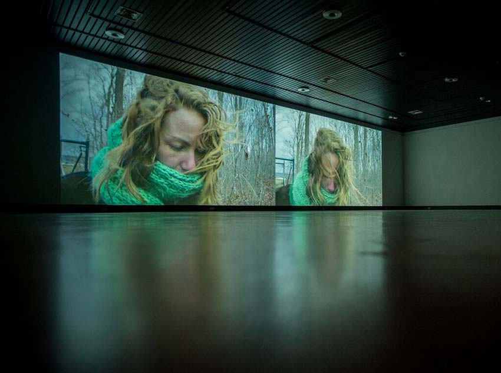
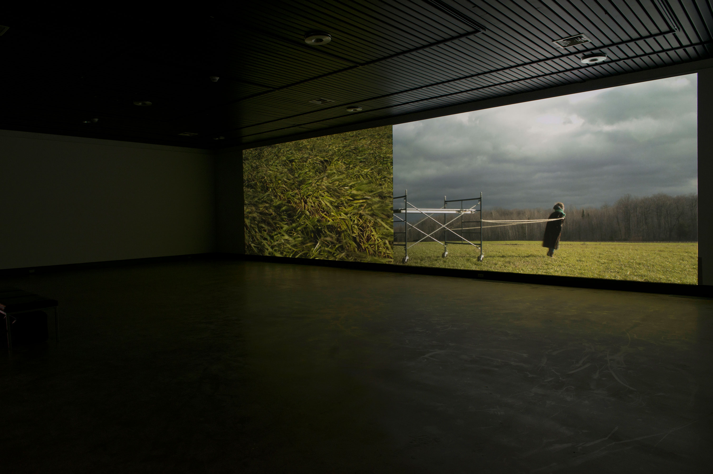
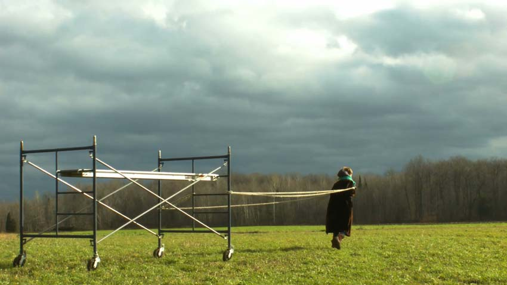
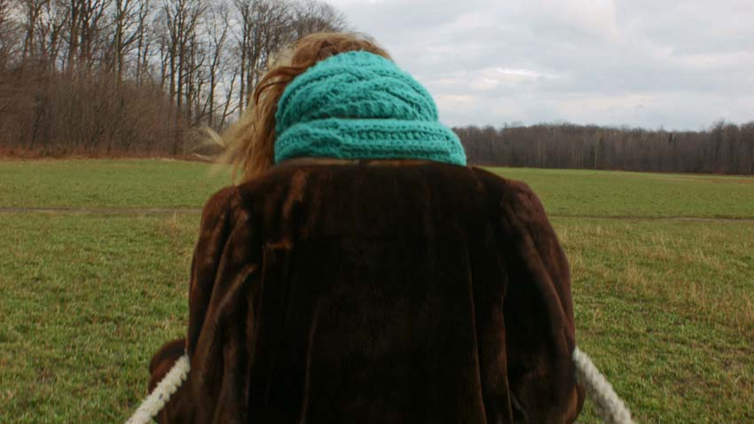
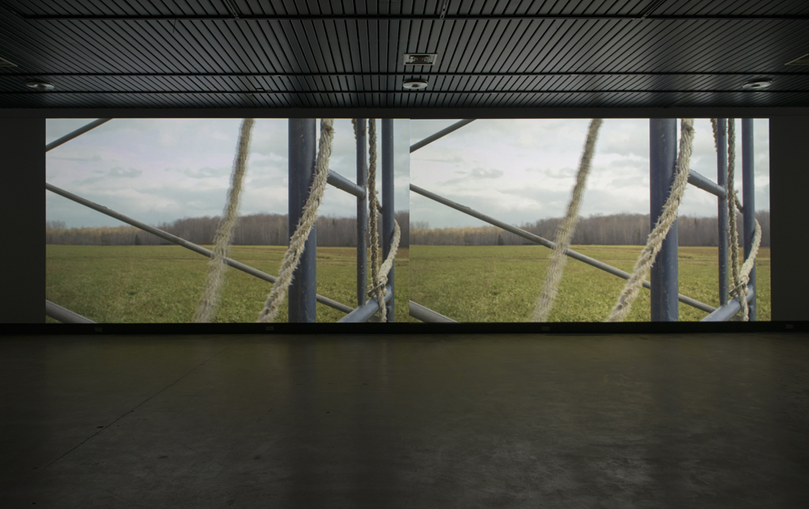
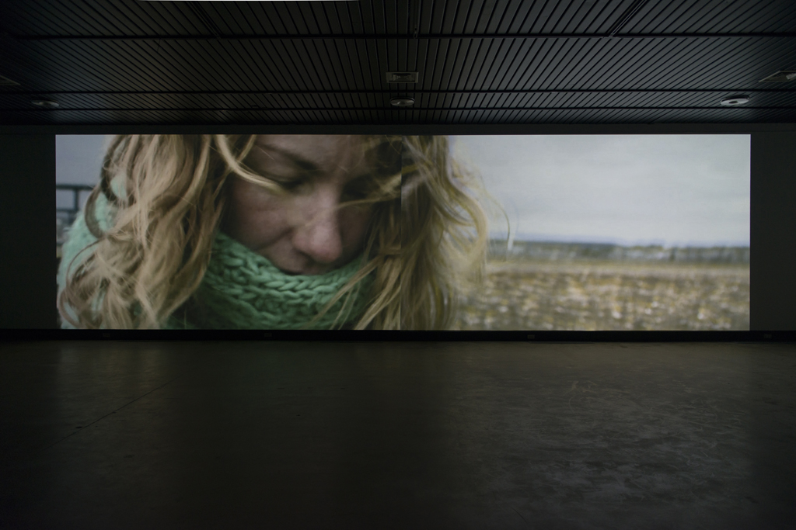

Jessica Arseneau

Photo credit: Louis-Philippe Chiasson

Photo credits: Mathieu Léger




Photo credits: Mathieu Léger
Lost Idyll
2015
2 channels digital video
00:11:55
Alternately one or two images projected side by side, this video installation shows a woman transporting a cumbersome scaffolding through various spacious landscapes and an autumnal forest. Entering the field of one projection and going out of the other, this woman makes a Sisyphean movement, repeating from a place to another in a continuous mobility.
Ephemeral structures composing our urban landscape, the scaffolding characterize the spectacle of the everyday life and is a common figure of our collective imaginary. The loneliness of this woman, in the context of this double fallow space of the field and the forest, refers to the difficulty commonly felt by all to project itself in the future, by definition indeterminate. While this woman continues to walk, an ambiguity stands out between the object suggesting a fixity and this perpetual passage. It recalls the everyday systematization that opposes itself to what is at the most transitory and indefinitely unfinished.
SPECIAL THANKS TO
Léandre Bourgeois
Jean-Francois Boisvenue
Martine Brisson
Jérôme Décarie
Éric Delarue
Jean-François Desaulniers
Claude Desbiens
Normand Forget
Violaine Gauvreau
Élodie Lançon
Will Niava
Julie Perron
Marc-Yvan S. Poitras
Martin Skorek
Carl Surprenant
Lost Idyll (2015) is distributed by Groupe Intervention Vidéo (GIV) : givideo.org